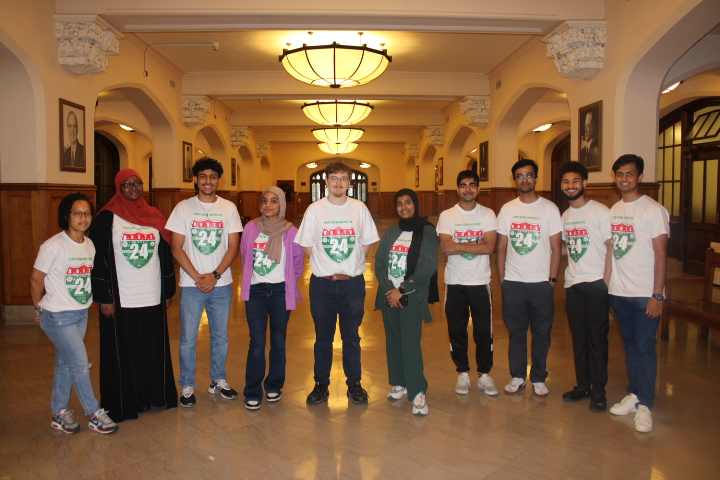
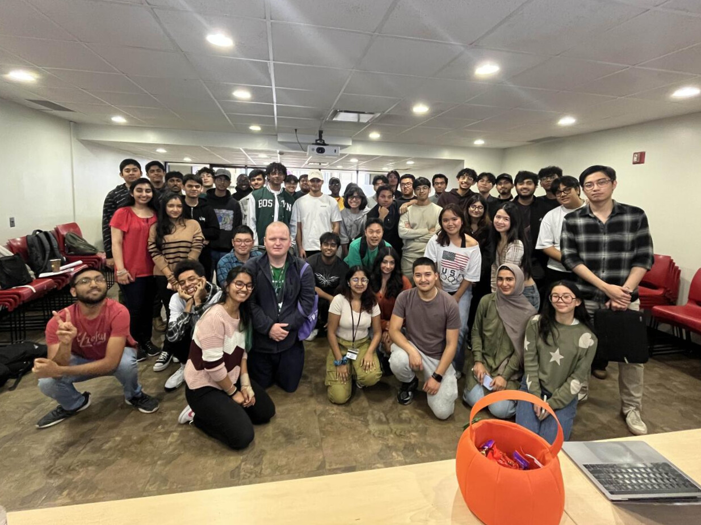
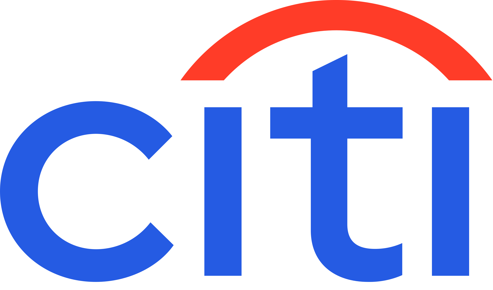
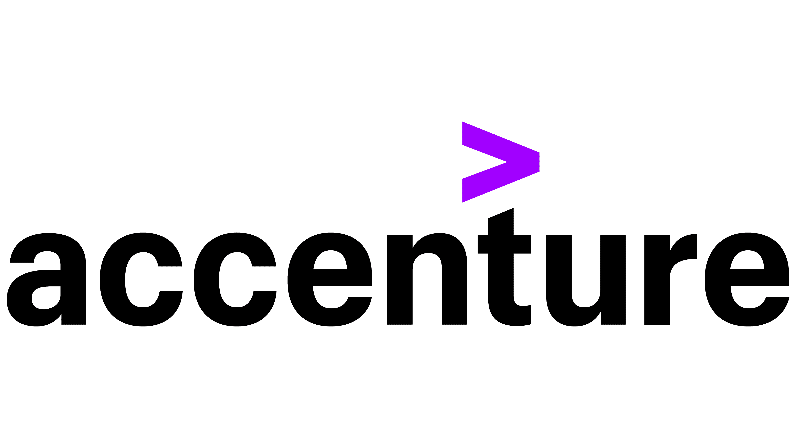

Arnav Deepaware
AI-native full-stack/backend engineer building LLM tools, cloud apps, and data systems.
About Me
I am a Computer Science senior at The City College of New York and a software engineer focused on AI-native full-stack and backend systems. I build LLM tools, cloud-deployed applications, internal data platforms, and user-facing AI products with an emphasis on reliable APIs, maintainable systems, and practical product value.
My strongest work combines professional software delivery with independent systems projects. At truCurrent, I built internal tooling with Python, React, Azure App Service, data validation workflows, and stakeholder-facing dashboards. I also built LLM Control Plane, a production-style FastAPI gateway for model routing, rate limits, budgets, retries, fallback behavior, circuit breakers, and observability.
I am looking for 2027 new grad and Spring internship roles across software engineering, backend, full-stack, AI applications, LLM systems, platform/cloud, and data/ML-oriented engineering.
Technical Skills
| Languages: Python, Java, C/C++, JavaScript, TypeScript, Dart, SQL | Backend & APIs: FastAPI, Flask, Node.js, Express, REST APIs, WebSockets, Pydantic, API design |
| Frontend & UI: React, Next.js, HTML/CSS, Tailwind CSS, Flutter, Chart.js | AI & LLM Systems: LLM applications, RAG, prompt orchestration, model routing, Gemini, Whisper, Deepgram |
| Data & ML: PostgreSQL, MongoDB, MySQL, pandas, NumPy, scikit-learn, TensorFlow, Keras, OpenCV, MediaPipe | Cloud & DevOps: Azure, Docker, Docker Compose, GitHub Actions, Redis, Prometheus, Grafana, CI/CD, testing |
| Developer Tools: Git, GitHub, Postman, Unix/Linux, shell scripting, monitoring | Product Strengths: data validation, observability, stakeholder dashboards, reliable APIs, documentation |
Experience
Product Development Intern
- Built internal dashboard tooling with Python, React, and Azure App Service to support file and data workflows for non-technical stakeholders.
- Automated validation and transformation pipelines that converted CSV inputs to Parquet and generated 14 stakeholder-facing metrics, improving internal processing speed by 25%.
- Developed a policy monitoring application using Python, Streamlit, and public legislative APIs, including status normalization, delta detection, weekly reports, and user-facing documentation.
- Collaborated with technical and non-technical stakeholders to deploy, document, and iterate on internal tools while keeping implementation details public-safe.
AI Fellow
- Selected for a competitive national AI & Machine Learning fellowship (1,000 fellows).
- Completed project-based work using Python, pandas, scikit-learn, supervised and unsupervised learning workflows, and stakeholder-readable results.
- Strengthened practical ML fundamentals through applied model development, validation, and industry mentorship.
Tech Fellow
- Selected among 130 students for the fellowship from 5,000 computer science students across 25 CUNY colleges.
- Built applied data science and AI projects spanning predictive modeling, traditional ML, data workflows, and RAG concepts.
Computer Science Tutor
- Tutored 16+ students in C++, Java, data structures, algorithms, and debugging.
- Translated complex programming concepts into practical explanations and step-by-step problem-solving strategies.
Software Engineer Mentee
- Selected for a 10-week mentorship program with a Google software engineer focused on technical problem-solving and interview preparation.
- Practiced software engineering fundamentals through weekly mock interviews, code reviews, and systems-focused discussions.
Software Engineer Intern
- Implemented Flutter profile screen updates from Figma designs, integrating 23 Laravel-backed REST endpoints into mobile app flows.
- Built and tested profile and subscription entry points across sprint cycles, supporting product updates for a 1,000+ user app.
- Collaborated with designers, backend engineers, and product stakeholders to ship UI improvements aligned with upcoming releases.
Immersion Fellow
- Completed training and mentorship in design thinking, problem-solving, and data visualization.
- Presented research-backed product and strategy recommendations to industry mentors, strengthening stakeholder communication.
Featured Projects
LLM Control Plane
- Built a production-style FastAPI gateway for model routing, rate limits, budgets, retries, fallback behavior, and provider abstraction.
- Implemented Redis-backed controls, circuit breakers, and observability through Prometheus and Grafana.
- Validated reliability behavior with 93 tests covering routing, policies, failures, and request lifecycle behavior.
truCurrent Internal Data Platform
- Built public-safe internal tooling for file workflows, stakeholder dashboards, and policy monitoring during my truCurrent internship.
- Automated CSV-to-Parquet validation workflows and surfaced 14 metrics, improving internal processing speed by 25%.
- Deployed and documented tools with Python, React, Azure App Service, Streamlit, and public legislative APIs.
SpeakSpaceVR
- Built a browser-based WebXR public speaking coach that simulates classrooms, auditoriums, and conference environments.
- Integrated MediaRecorder, Flask, WebSockets, Whisper, Deepgram, and Gemini for speech analysis and session feedback.
- Tracked speaking performance across sessions using pacing, filler-word, and interaction metrics.
A-eye
- Built a multimodal accessibility assistant that identifies packaged food from camera input and extracts nutrition and allergen information.
- Implemented a voice-first workflow with speech-to-text, Gemini vision/chat reasoning, and text-to-speech for hands-free product queries.
- Designed context-aware session logic so the assistant can answer follow-up questions about the item in focus.
SitRight
- Developed a posture monitoring web app using OpenCV and MediaPipe to detect poor sitting posture in real time via webcam.
- Built a real-time WebSocket inference loop to process pose landmarks and deliver low-latency posture feedback.
- Implemented visual feedback and session analytics to help users improve ergonomics over time.
SnackGPT
- Built an AI pantry app that uses receipt parsing and ingredient tracking to suggest recipes from food users already have.
- Used Gemini-powered extraction and recipe generation to reduce food waste while keeping recommendations personalized.
- Stored pantry and recipe data with a practical full-stack workflow for user-facing meal planning.
Campus & Community Involvement

TEDxCUNY
Sub-Team Director
Help organize an annual conference for 600+ attendees, leading a team of 7 and coordinating with 30+ team members and 40+ partners and sponsors.

CCNY Stem Institute
Research Assistant / Mentor
Help NYC high school students learn, research, and build projects in game development and AI applications.

ACM
Workshop Manager & 2027 Class Rep.
Lead workshops and student initiatives that support technical development and strengthen ACM's campus community.
Goldman Sachs
Career Insights Fellow
Chosen from 10,000 applicants, gaining insights into career paths, company culture, and networking through interactive workshops.

Citi
Freshman Discovery Program
An exploratory program designed to help learn Citi's culture and various businesses across the firm.

Accenture
Career Catalyst Fellow
Explored the intersection of technology and consulting. Engaged in mentorship meetings and analyzed case studies to deepen knowledge of tech-driven innovations.
Let's Connect
I am seeking 2027 new grad SWE roles and Spring internship opportunities across backend, full-stack, AI applications, LLM systems, platform/cloud, and data/ML-oriented engineering.